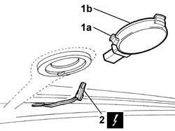

5050B64 RAIN SENSOR ELECTRONIC UNIT R R
- Path
- Procedures > 50 AUXILIARY UNITS > 5050 SCREEN WASHERS AND HEADLAMP WASH/WIPE > 5050B WINDSCREEN WASH/WIPE > 5050B64 RAIN SENSOR ELECTRONIC UNIT R R
- Kind
- repair procedure (removal / refitting; the operation number is the code)
- Applies to
- all engines; all production periods
- Interactive page
- https://sloeber94.github.io/elrnDB-fUlss/en/#/179007506
Applies to: all engines; all production periods
 Removing
Removing
 Refitting
RefittingOp. 5530B56 BATTERY DRIP TRAY COVER - R.R.
- Disconnect the negative battery terminal.
Op. 5050B66 RAIN SENSOR ELECTRONIC UNIT COVER - R R
1. Extract the sensor (1b) working on the tabs (1a).
2. Disconnect the electrical connection.
- Remove the rain sensor.

Applies to: all engines; all production periods
Refitting
Removing- Connect the electrical connection.
- Place the sensor in the housing and secure it using the retaining tabs.
Op. 5050B66 RAIN SENSOR ELECTRONIC UNIT COVER - R R
- Connect the negative battery terminal.